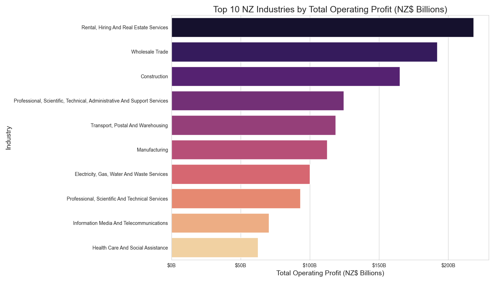

Exploratory analysis of Stats NZ quarterly business financial data using pandas, matplotlib & seaborn. Generates 10+ decision‑ready charts: industry sales & profit, sector trends, YoY growth, recovery and efficiency.
Overview
From raw CSV to clear visuals in minutes. This project cleans the Stats NZ data, builds focused subsets, and outputs PNG charts for your portfolio.
How to run locally
- Open the folder in VS Code.
- Ensure the CSV is named business_financial_data.csv and sits next to the Python file.
- Create a virtual env (optional) and install deps:
python -m venv .venv . .venv/bin/activate # (Mac/Linux) # .venv\Scripts\activate # (Windows) pip install pandas matplotlib seaborn - Run the script:
python "try 1 gemini.py" # uses the provided filename # or rename to main.py and run # python main.py - PNG charts will be saved in the project folder. Move them into images/projects/python/ to show on this page.
Tip: commit both the code and images/projects/python/ folder to GitHub Pages so the visuals appear on your live site.
Gallery (auto‑generated charts)



Key highlights
- Clean, typed time series (e.g., period to datetime) and numeric casting with safe coercion.
- Focused subsets: Sales vs Profit vs Assets vs Inventories; key sectors like Manufacturing & Retail.
- Consistent chart styling, proper currency tick formatting and readable legends.
- Scorecards for profit margin & contribution; recovery comparison (pre/post‑COVID); efficiency (asset turnover).
- Portable: produces static PNGs ready for portfolio pages like this.
- VS Code + GitHub friendly: simple run, commit, and publish on GitHub Pages.
Code
Below is a trimmed header so recruiters can preview the project. The full code lives in the repository.
# analyze_business_financials() — loads the CSV, cleans columns & types,
# creates sales/profit/assets/inventories subsets, and exports 10+ charts.
# Stack: pandas, matplotlib, seaborn, matplotlib.ticker
if __name__ == "__main__":
analyze_business_financials()